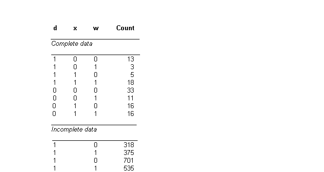
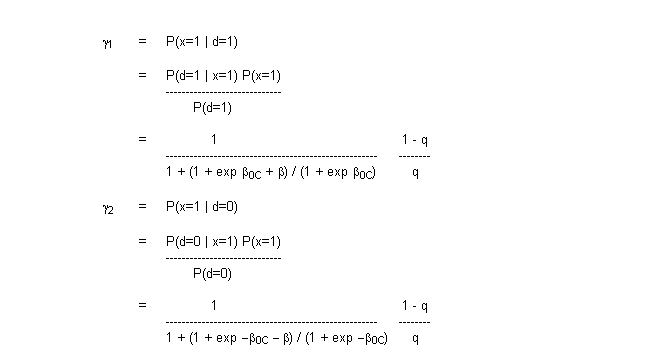
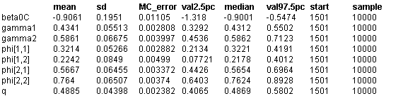

![[cervix0]](cervix0.bmp) Cervix: case - control study
Cervix: case - control study
with errors in covariates
Carroll, Gail and Lubin (1993) consider the problem of estimating the odds ratio of a disease d in a case-control study where the binary exposure variable is measured with error. Their example concerns exposure to herpes simplex virus (HSV) in women with invasive cervical cancer (d=1) and in controls (d=0). Exposure to HSV is measured by a relatively inaccurate western blot procedure w for 1929 of the 2044 women, whilst for 115 women, it is also measured by a refined or "gold standard'' method x. The data are given in the table below. They show a substantial amount of misclassification, as indicated by low sensitivity and specificity of w in the "complete'' data, and Carroll, Gail and Lubin also found that the degree of misclassification was significantly higher for the controls than for the cases (p=0.049 by Fisher's exact test).

They fitted a prospective logistic model to the case-control data as follows
d
i
~ Bernoulli(p
i
) i = 1,...,2044
logit(p
i
) =
b
0C
+
b
x
i
i = 1,...,2044
where
b
is the log odds ratio of disease. Since the relationship between d and x is only directly observable in the 115 women with "complete'' data, and because there is evidence of differential measurement error, the following parameters are required in order to estimate the logistic model
f
1,1
= P(w=1 | x=0, d=0)
f
1,2
= P(w=1 | x=0, d=1)
f
2,1
= P(w=1 | x=1, d=0)
f
2,2
= P(w=1 | x=1, d=1)
q = P(x=1)
The differential probability of being exposed to HSV (x=1) for cases and controls is calculated as follows

The BUGS code is given below.
The role of the variables
x
1
and
d
1
is to pick the appropriate value of
f
(the incidence of w) for any given true exposure status x and disease status d. Since x and d take the values 0 or 1, and the subscripts for
f
take values 1 or 2, we must first add 1 to each
x[i]
and
d[i]
in the BUGS code before using them as index values for
f
. BUGS does not allow subscripts to be functions of variable quantities --- hence the need to create
x1
and
d1
for use as subscripts. In addition, note that
g
1
and
g
2
were not simulated directly in BUGS, but were calculated as functions of other parameters. This is because the dependence of
g
1
and
g
2
on d would have led to a cycle in the graphical model which would no longer define a probability distribution.
model
{
for (i in 1 : N) {
x[i] ~ dbern(q) # incidence of HSV
logit(p[i]) <- beta0C + beta * x[i] # logistic model
d[i] ~ dbern(p[i]) # incidence of cancer
x1[i] <- x[i] + 1
d1[i] <- d[i] + 1
w[i] ~ dbern(phi[x1[i], d1[i]]) # incidence of w
}
q ~ dunif(0.0, 1.0) # prior distributions
beta0C ~ dnorm(0.0, 0.00001);
beta ~ dnorm(0.0, 0.00001);
for(j in 1 : 2) {
for(k in 1 : 2){
phi[j, k] ~ dunif(0.0, 1.0)
}
}
# calculate gamma1 = P(x=1|d=0) and gamma2 = P(x=1|d=1)
gamma1 <- 1 / (1 + (1 + exp(beta0C + beta)) / (1 + exp(beta0C)) * (1 - q) / q)
gamma2 <- 1 / (1 + (1 + exp(-beta0C - beta)) / (1 + exp(-beta0C)) * (1 - q) / q)
}
Data
( click to open )
Inits for chain 1 Inits for chain 2
( click to open )
Results
A 1000 update burn in followed by a further 10000 updates gave the parameter estimates
